A walkthrough of the patient website, the Ramu AI assistant, online booking, and the admin dashboard — with real screenshots — plus an honest status of what's done and what's still ahead.
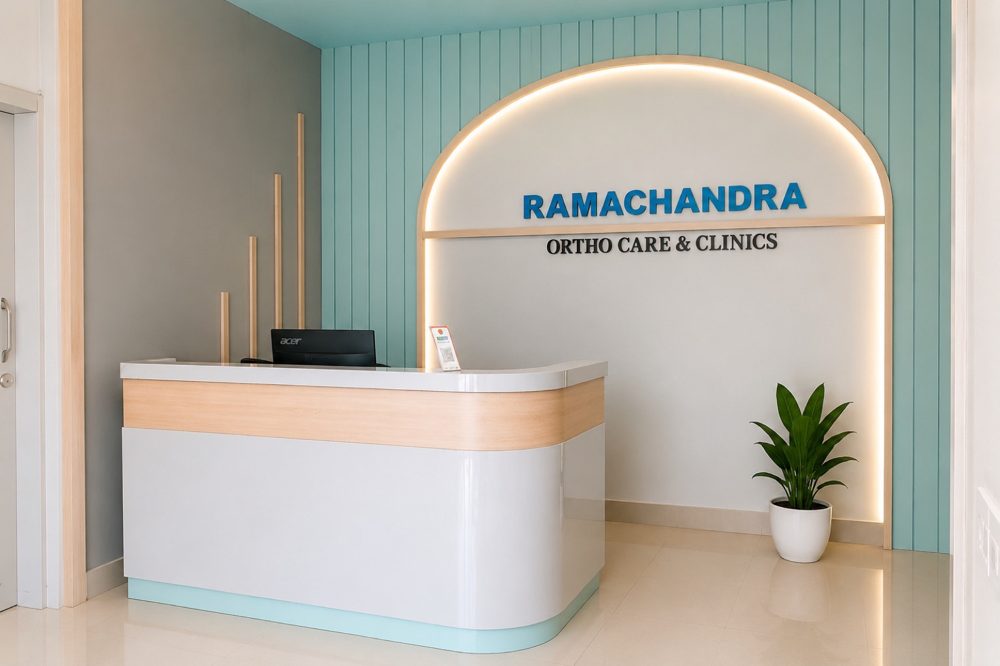
Four modules make up the project. The site, booking, and admin dashboard are live and in daily use. WhatsApp is running as a manual flow for now — the reason why is explained on this page, plainly.
Homepage — hero, live "doctor in today" card, services, reviews, hours Pulls real Google reviews and today's consulting status automatically | Live |
Mobile & tablet layout Fully responsive — tested on phone, tablet, and desktop | Live |
PWA — installable, works from home screen Patients can "Add to Home Screen" for app-like access | Live |
Answers timings, fees, location, doctor-in-today status Same logic that powers the WhatsApp-style flow, embedded directly on the site | Live |
Bilingual — English & Telugu, switchable mid-chat One tap toggles the whole conversation's language | Live |
Patient self-booking — pick a day, a 10-minute slot, confirm Slots update live against the real database, no double-booking possible | Live |
Admin — Today's queue, walk-ins, live token/serving number Front desk runs the whole day from this one screen | Live |
Admin — Schedule, Patients, Revenue tabs Consulting hours, patient history, and collections all in one dashboard | Live |
Booking confirmation / cancellation texts, sent by staff Front desk sends these manually today — takes a minute per booking, works fine at current volume | Manual for now |
Automatic WhatsApp send, no staff step The clinic's WhatsApp Business account is verified and live with Meta, and the automated send is wired directly through Meta's own platform, since the WhatsApp reseller we first tried turned out to charge for this even on their free tier. The one step left is Meta approving the exact wording of the confirmation and cancellation texts themselves — a standard review, separate from the verification that already cleared | Wording pending approval |
The front door — what a patient sees first, on their phone or a desktop, whether they're checking if the doctor is in or looking up the address before a visit.
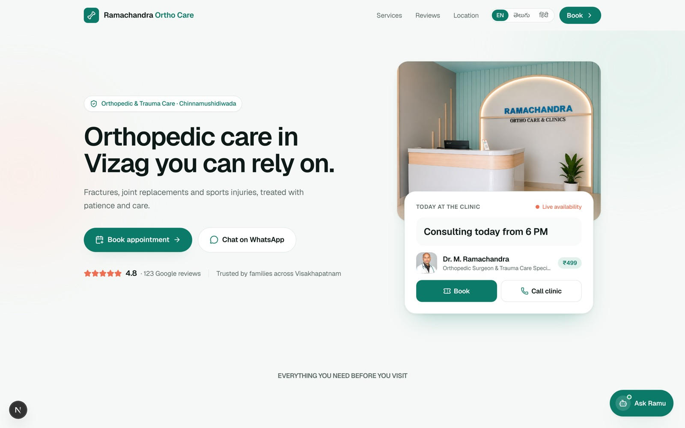
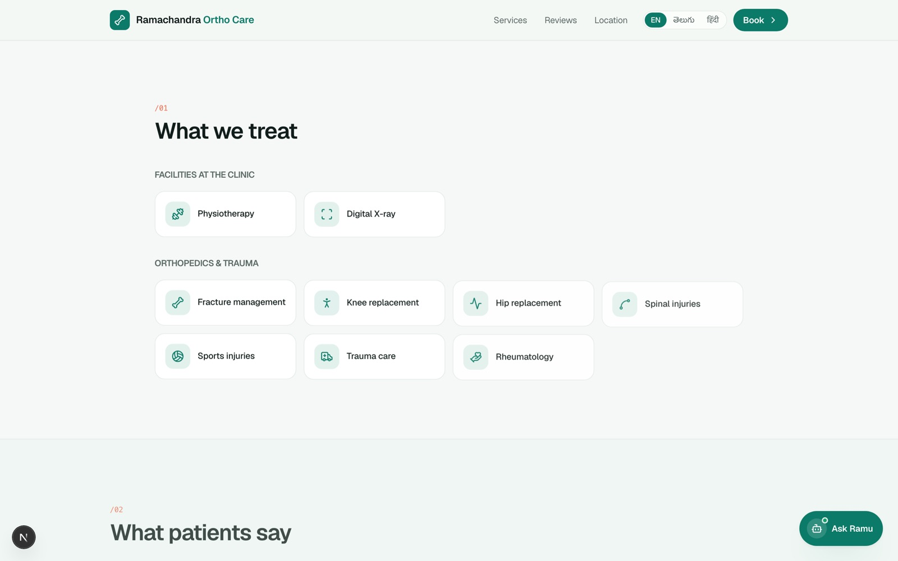
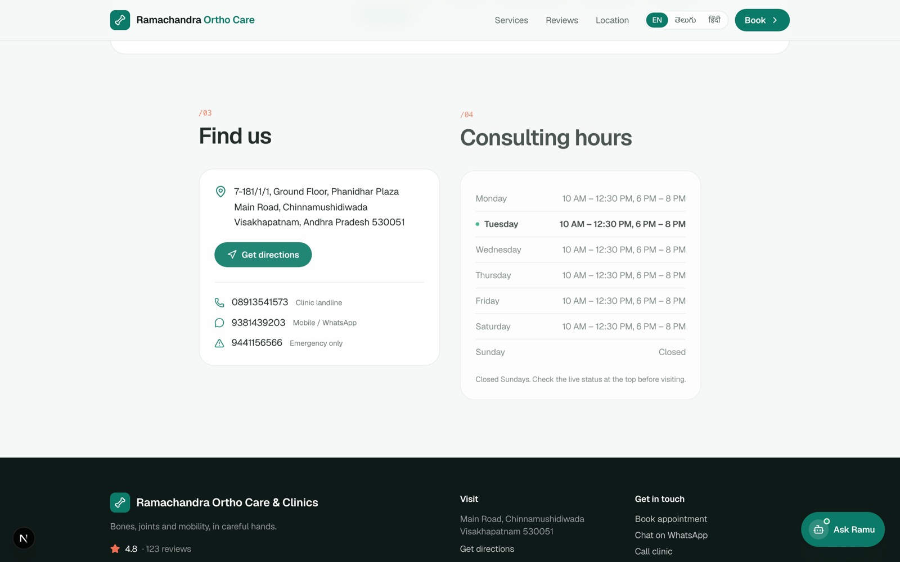
Real Google reviews build confidence before a first visit — pulled straight from the clinic's own listing.
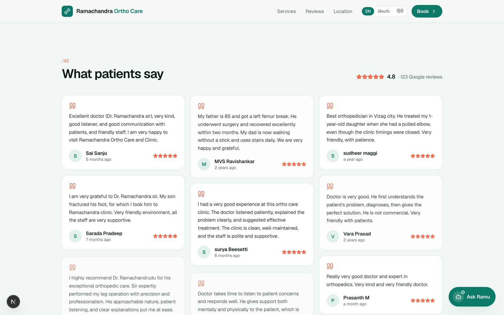
Most patients will open this on a phone before anything else — so mobile isn't a shrunk-down afterthought, it's the primary layout the site was designed around.
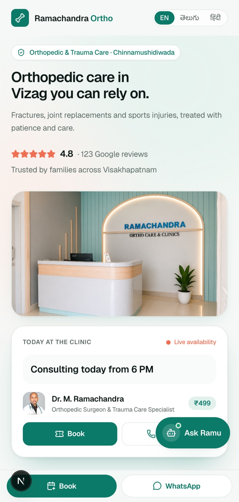
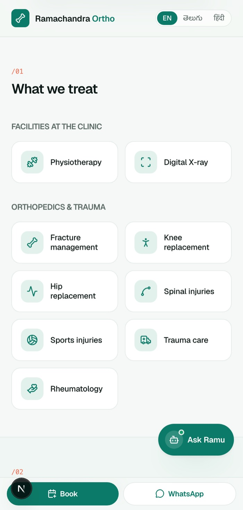
Named after the clinic itself — Ramu answers the questions patients usually call the front desk for, right on the website, in English or Telugu, any time of day.
A floating "Ask Ramu" button sits on every page. No app to download, no account to create.
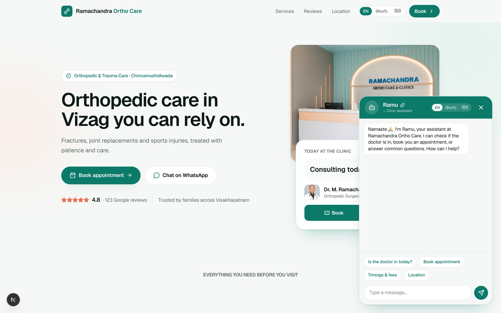
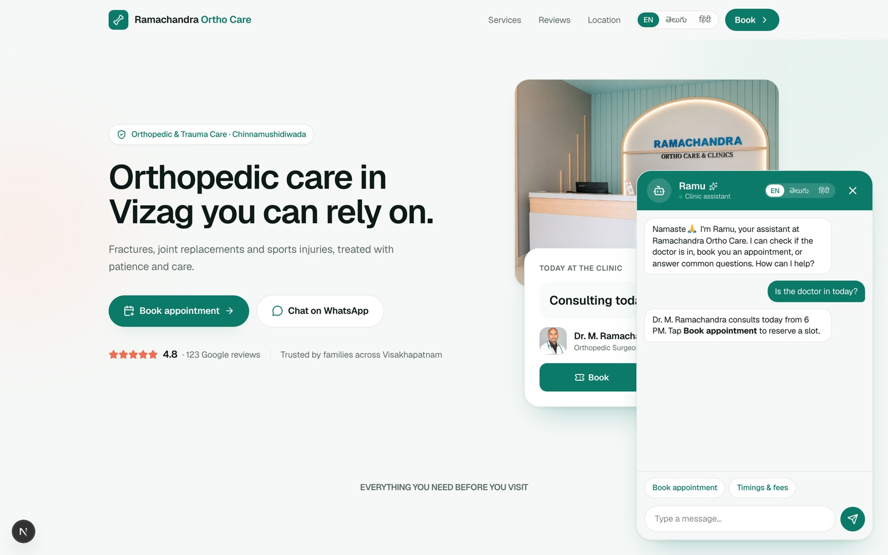
Ramu runs on the same logic built for the clinic's WhatsApp booking flow — so the answers a patient gets on the site match what they'd get messaging the clinic directly. Nothing to keep in sync by hand.
The homepage includes a live demo of what the WhatsApp experience looks like — the same conversational flow, styled exactly like a WhatsApp chat, so patients (and you) can see it before it's fully automated end to end.
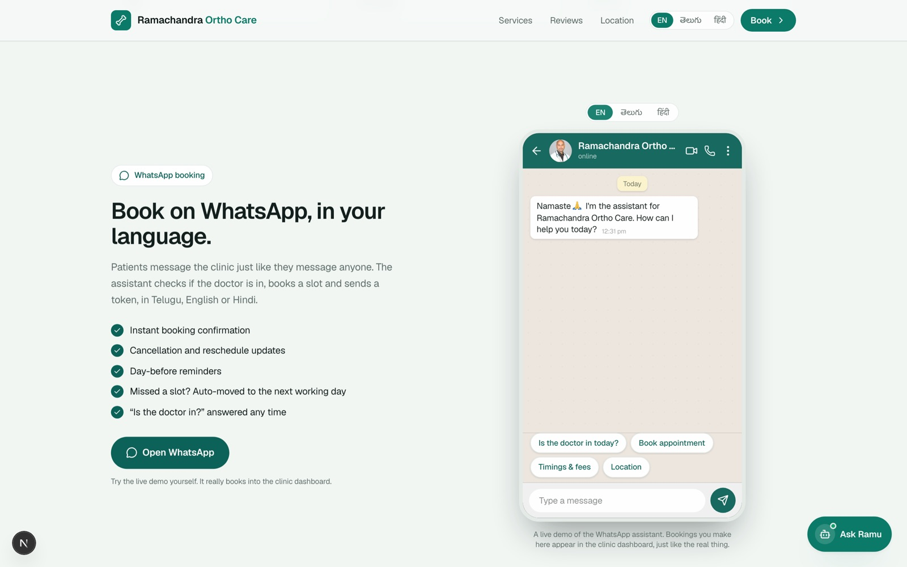
A patient can book without calling the clinic at all — pick a day, see real open slots, confirm with their name and phone number.
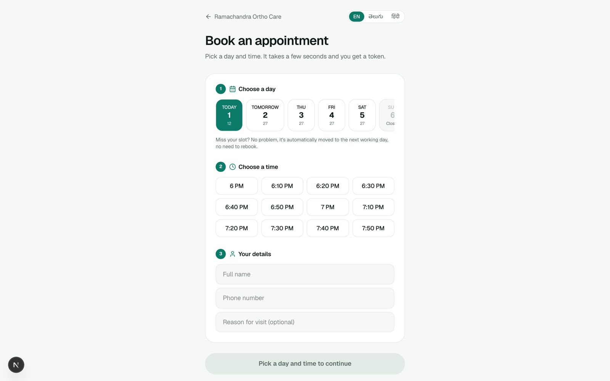
What the front desk (and you) actually work from all day — today's queue, the weekly schedule, patient history, and revenue, in one private screen.
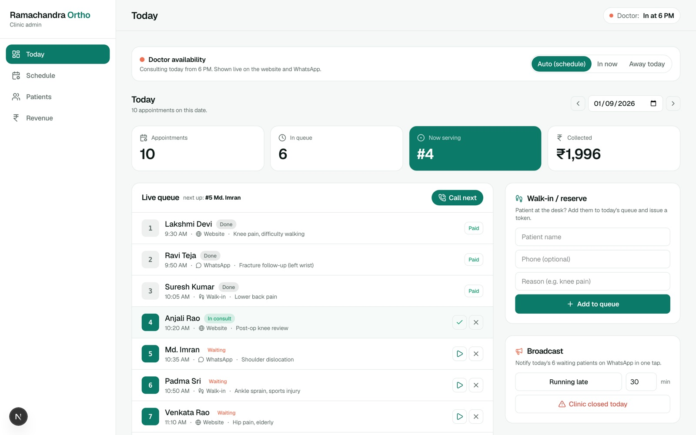
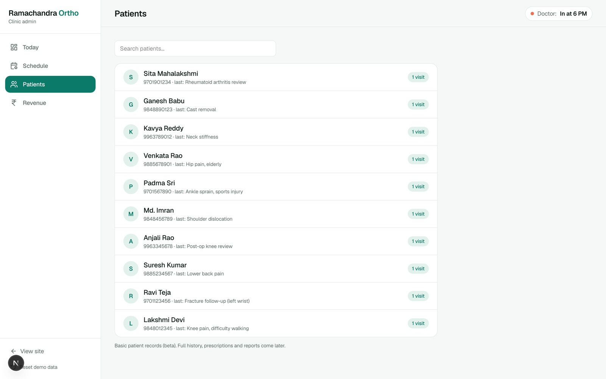
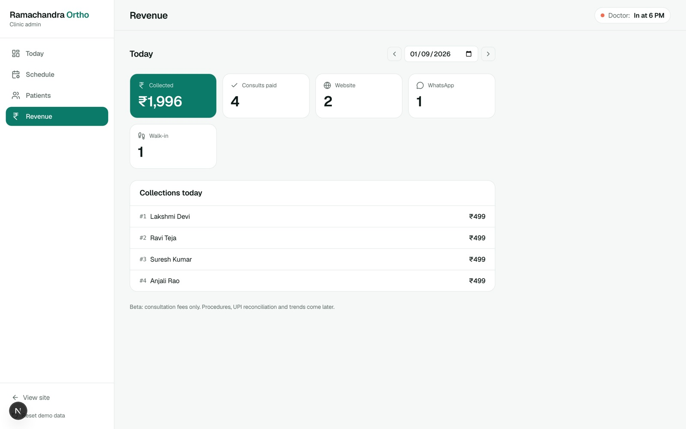
The one thing left on the list, and why it's worth finishing.
| Date | Change |
|---|---|
| September 2026 | First handbook & progress report — website, Ramu, booking and admin dashboard live at rcorthocare.made-by-ac.com; WhatsApp Business account verified and live with Meta, automated send pending message-wording approval. |